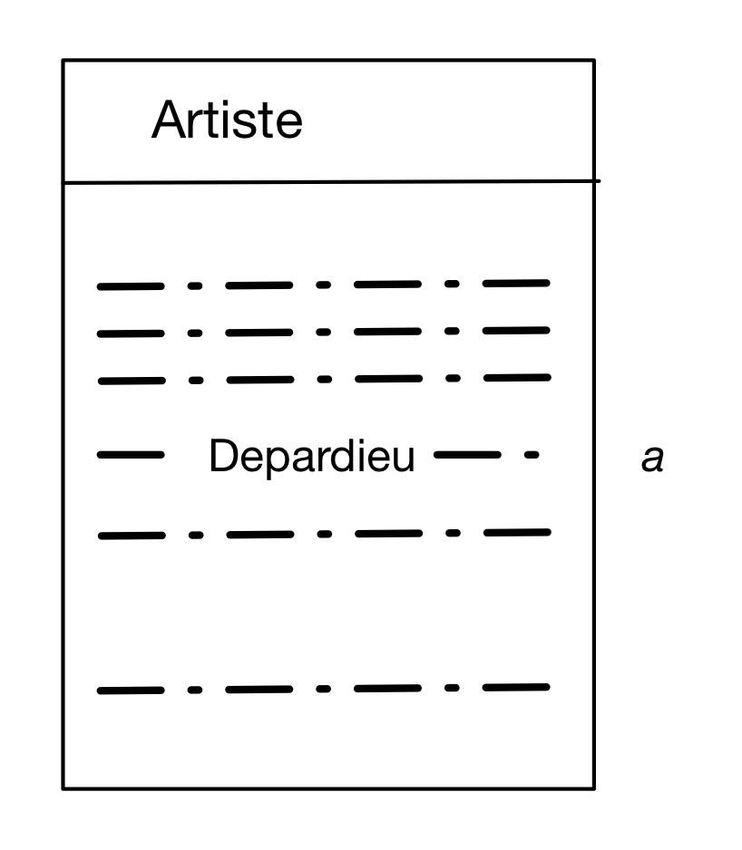
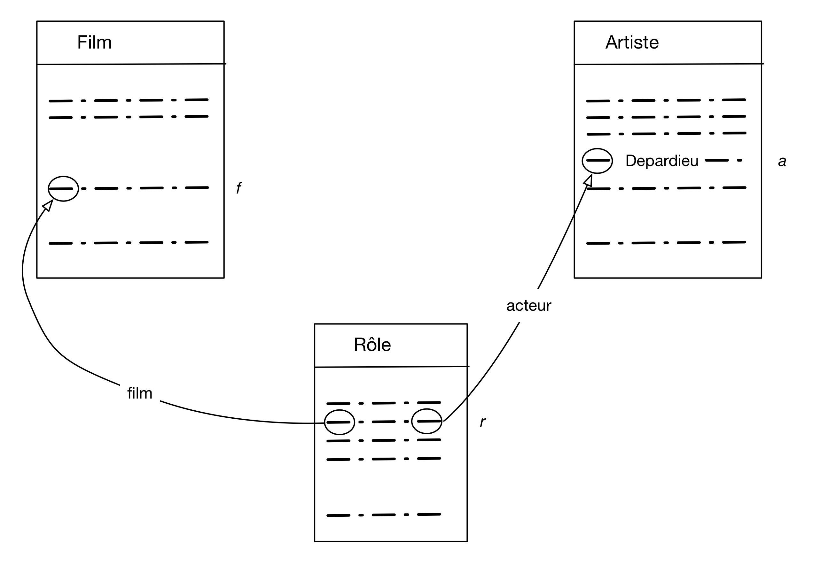
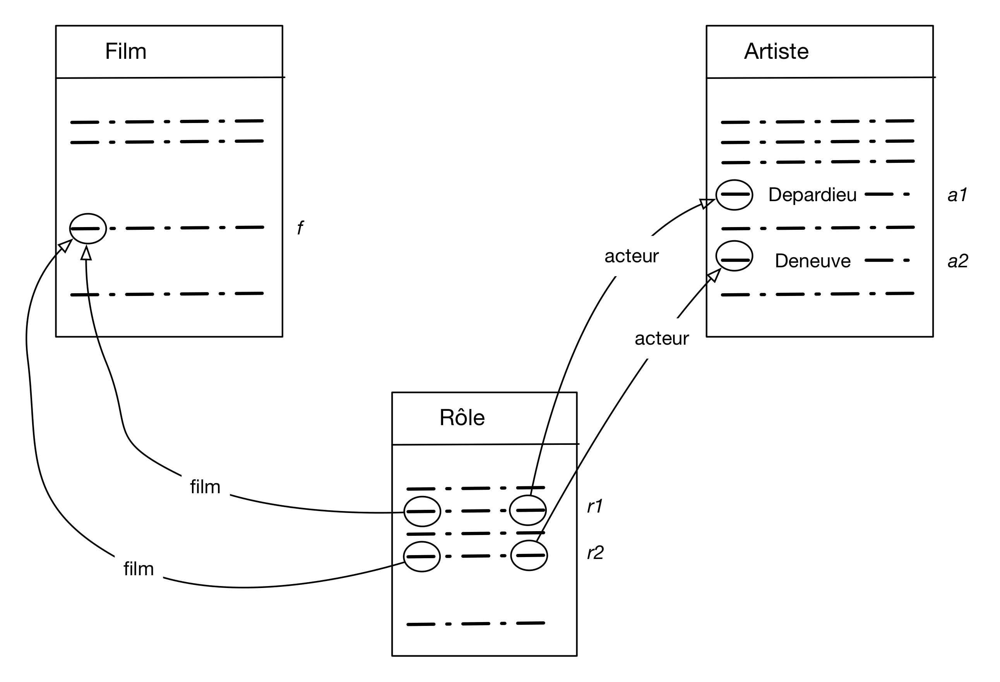
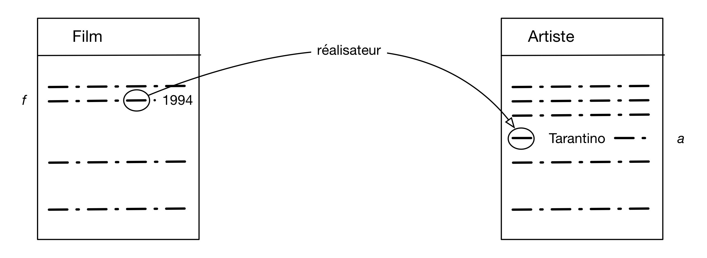
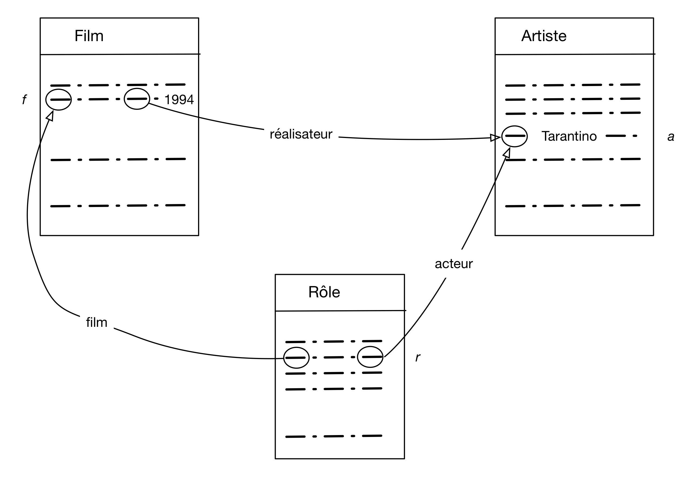

SQL, langage déclaratif¶
Il est courant en informatique de disposer de plusieurs langages pour résoudre un même problème. Ces langages ont leur propre syntaxe, mais surtout ils peuvent s’appuyer sur des approches de programmation très différentes. Vous avez peut-être rencontré des langages impératifs (le C), orientés-objet (Java, Python) ou fonctionnels (Camel, Erlang).
Certains langages sont plus appropriés à certaines tâches que d’autres. Il est plus facile de vérifier les propriétés d’un programme écrit en langage fonctionnel par exemple que d’un programme C. Si l’on s’en tient aux bases de données (et particulièrement pour les bases relationnelles), deux approches sont possibles: la première est déclarative et la seconde procédurale.
L’approche procédurale est assez familière: on dispose d’un ensemble d’opérations, et on décrit le calcul à effectuer par une séquence de ces opérations. Chaque opération élémentaire peut être très simple, mais la séquence à construire pour régler des problèmes complexes peut être longue et peu claire.
L’approche déclarative est beaucoup plus simple conceptuellement: elle consiste à décrire les propriétés du point d’arrivée (le résultat) en fonction de celles du point de départ (les données de la base, dans notre cas). La description de ces propriétés se fait classiquement par des formules logiques qui indiquent comment l’existence d’un fait \(f_1\) au départ implique l’existence d’un fait \(f_2\) à l’arrivée.
Cela peut paraître abstrait, et de fait ça l’est puisqu’aucun calcul n’est spécifié. On s’appuie simplement sur le fait que l’informatique sait effectuer des calculs spécifiés par des formules logiques (dans le cas particulier des bases de données en tout cas) apparemment indépendantes de tout processus calculatoire. Il se trouve que SQL est un langage déclaratif, et qu’il l’était même exclusivement dans sa version initiale.
Note
Il existe de très bonnes raisons pour privilégier le caractère déclaratif des langages de requêtes, liées à l’indépendance entre le niveau logique et le niveau physique donc nous avons déjà parlé, et à l’opportunité que cette indépendance laisse au SGBD pour déterminer la meilleure manière d’évaluer une requête. Cela n’est possible que si l’expression de cette requête est assez abstraite pour n’imposer aucun choix de calcul à priori.
Avec SQL, on ne dit rien sur la manière dont le résultat doit être calculé: c’est le problème du SGBD, qui sait d’ailleurs trouver la solution bien mieux que nous puisqu’on ne connaît pas l’organisation des données. On se contente avec SQL d’énoncer les propriétés de la relation de sortie en fonction des propriétés de la base en entrée. Pour bien utiliser SQL, et surtout bien comprendre la signification de ce que l’on exprime, il faut donc maîtriser l’expression de formules logiques et connaitre les mécanismes d’inférences des valeurs de vérité.
On rencontre parfois l’argument que SQL est, à l’inverse d’un langage de programmation, accessible à un non-initié, car il est proche de la manière dont on exprimerait naturellement une recherche. Ce n’est vrai que si on sait formuler cette dernière de manière rigoureuse, et c’est exactement ce que nous allons apprendre dans ce chapitre.
SQL est-il totalement déclaratif?
Au fil des années et des normes successives, SQL s’est étendu pour incorporer un autre langage relationnel, l’algèbre, que nous étudierons dans le prochain chapitre. Est-ce à dire que la forme déclarative n’était pas suffisante? Non: tous ces ajouts sont redondants et auraient pu être omis sans affecter l’expressivité du langage.
On se retrouve à l’heure actuelle avec un langage très riche dans lequel on peut exprimer des requêtes de manière soit déclarative, soit procédurale, soit par un mélange des deux. Cela ne contribue pas forcément à la facilité d’apprentissage, et introduit une certaine confusion sur la portée de telle ou telle formulation, et sa possible équivalence avec une autre.
En présentant successivement les deux approches, et en montrant ensuite comment elles sont parfaitement équivalentes l’une à l’autre, ce cours a choisi de tenter de clarifier la situation.
S1: Un peu de logique¶
Supports complémentaires:
La logique est l’art de raisonner, autrement dit de construire des argumentations rigoureuses permettant d’induire ou déduire de nouveaux faits à partir de faits existants (ou considérés comme tels). La logique mathématique est la partie de la logique qui présente les règles de raisonnement de manière formelle. C’est une branche importante des mathématiques, qui s’est fortement développée au début du XXe siècle, et constitue un fondement majeur de la science informatique.
Commençons par effectuer un rappel des quelques éléments de logique formelle qui sont indispensables pour formuler et interpréter les requêtes SQL. Ce qui suit n’est qu’une très brève (et assez simplifiée) introduction au sujet: il faut recourir à des textes spécialisés si vous voulez aller plus loin. Pour une passionante introduction historico-scientifique, je vous recommande d’ailleurs la bande dessinée (mais oui) Logicomix, parue chez Vuivert en 2009.
Important
Ceux qui pensent maîtriser le sujet peuvent sauter cette session.
La partie la plus simple de la logique formelle est le calcul propositionnel, par lequel nous commençons. SQL est construit sur une forme plus élaborée, impliquant des prédicats, des collections et des quantificateurs, notions brièvement présentées ensuite dans une optique « bases de données ».
Le calcul propositionnel¶
Une proposition est un énoncé auquel on peut attacher une valeur de vérité: vrai (V) ou faux (F). Des énoncés comme « Ce livre parle d’informatique » ou « Cette musique est de Mozart » sont des propositions. Une question comme « Qui a écrit ce texte? » n’est pas une proposition.
Le calcul propositionnel décrit la manière dont on peut combiner des propositions pour former des formules (propositionnelles) et attacher des valeurs de vérité à ces formules. Les propositions peuvent être combinées grâce à des connecteurs logiques. Il en faut au moins deux, mais on en considère en général trois.
la conjonction, notée \(\land\)
la disjonction, notée \(\lor\)
la négation, notée \(\neg\)
On note classiquement les propositions par des lettres en minuscules, \(p\), \(q\), \(r\). La table ci-dessous donne les valeurs de vérités pour les formules obtenues à l’aide des trois connecteurs logiques, en fonction des valeurs de vérité de \(p\) et \(q\).
\(p\) |
\(q\) |
\(p \land q\) |
\(p \lor q\) |
\(\neg p\) |
|---|---|---|---|---|
V |
V |
V |
V |
F |
V |
F |
F |
V |
F |
F |
V |
F |
V |
V |
F |
F |
F |
F |
V |
Les formules créées par connecteurs logiques à partir de propositions ont elles-mêmes des valeurs de vérité, et on peut les combiner à leur tour. Généralement, si \(F_1\) et \(F_2\) sont des formules, alors \(F_1 \land F_2\), \(F_1 \lor F_2\) et \(\neg F_1\) sont aussi des formules. On crée ainsi des arbres dont les feuilles sont des propositions et les nœuds internes des connecteurs.
Pour représenter l’arbre dans le codage de la formule, on utilise des parenthèses et on évite ainsi toute ambiguité. La formule \(p \land q\) peut ainsi être combinée à \(r\) selon la syntaxe.
La valeur de vérité de la formule obtenue s’obtient par application récursive des règles
du truth-values. Si, par exemple, \(p, q, r\) ont respectivement
pour valeurs V, V et F, la formule ci-dessus s’interprète ainsi:
\((p \land q)\) vaut \((V \land V)\), donc V
\((p \land q) \lor r\) vaut \(V \lor r\), qui vaut \(V \lor F\), donc V
Deux formules sont équivalentes si elles ont les mêmes valeurs de vérité quelles que soient les valeurs initiales des propositions. Les équivalences les plus courantes sont très utiles à connaître. En notant \(F, F_1, F_2\) trois formules quelconques, on a:
\(\neg (\neg F)\) est équivalente à \(F\)
\(F_1 \land F_2\) est équivalente à \(F_2 \land F_1\) (commutativité)
\(F_1 \lor F_2\) est équivalente à \(F_2 \lor F_1\) (commutativité)
\(F \land (F_1 \land F_2)\) est équivalente à \((F\land F_2) \land F_1\) (associativité)
\(F \lor (F_1 \lor F_2)\) est équivalente à \((F\lor F_1) \lor F_2\) (associativité)
\(F \lor (F_1 \land F_2)\) est équivalente à \((F\lor F_1) \land (F \lor F_2)\) (distribution)
\(F \land (F_1 \lor F_2)\) est équivalente à \((F\land F_1) \lor (F \land F_2)\) (distribution)
\(\neg (F_1 \land F_2)\) est équivalente à \((\neg F_1) \lor (\neg F_2)\) (loi DeMorgan)
\(\neg (F_1 \lor F_2)\) est équivalente à \((\neg F_1) \land (\neg F_2)\) (loi DeMorgan)
Une tautologie est une formule qui est toujours vraie. La tautologie la plus évidente est
Une contradiction est une formule qui est toujours fausse. La contradiction la plus évidente est
Vérifiez que ces notions sont claires pour vous: il est bien difficile d’écrire correctement du SQL si on ne les maîtrise pas.
Note
Un connecteur très intéressant est l’implication, noté \(\to\). L’implication ne fait pas partie de connecteurs primaires car \(p \to q\) est équivalent à \(\neg p \lor q\). Nous y revenons dans les exercices. Et, oui, l’implication a un lien avec les dépendances fonctionnelles: nous y revenons aussi!
Prédicats¶
Une faiblesse de la logique propositionnelle est qu’elle ne considère que des énoncés « bruts », non décomposables. Si je considère les énoncés « Mozart a composé Don Giovanni », « Mozart a composé Cosi fan tutte », et « Bach a composé la Messe en si », la logique propositionnelle ne permet pas de distinguer qu’ils déclarent le même type de propriété (le fait de composer une œuvre) liant des entités (Mozart, Bach, leurs œuvres). Il est impossible par exemple en calcul propositionnel d’identifier que deux des propositions parlent de la même entité, Mozart.
Les prédicats sont des extensions des propositions qui énoncent des propriétés liant des objets. Un prédicat est de la forme \(P (X_1, X_2, \cdots, X_n)\), avec \(n\geq 0\), \(P\) étant le nom du prédicat, et les \(X_i\) désignant les entités liés par la propriété. On peut ainsi définir un prédicat \(Compose(X, Y)\) énonçant une relation de type X a composé Y entre l’entité représentée par X et celle représentée par Y.
Avec un prédicat, il est possible de donner un ensemble d’énoncés ayant tous la même structure. Appelons ces énoncés des nuplets pour adopter une terminologie « bases de données » (un logicien parlera plutôt d’atôme, ou de fait). Les trois propositions précédentes deviennent donc les trois nuplets suivants:
Compose (Mozart, Don Giovanni)
Compose (Mozart, Cosi fan tutte)
Compose (Bach, Messe en si)
Cette fois, contrairement au langage propositionnel, on désigne explicitement les entités: compositeurs (dont Mozart, qui apparaît deux fois) et œuvres. On obtient une collection de nuplets qui remplacent avantageusement les propositions grâce à leur structure plus riche.
Il existe virtuellement une infinité de nuplets énoncables avec un prédicat. Certains sont faux, d’autres vrais. Comment les distingue-t-on? Tout dépend du contexte interprétatif.
Dans un contexte arithmétique par exemple, les prédicats courants sont l’égalité, l’inégalité (stricte ou large) et leur négation. Le prédicat d’égalité s’applique à deux valeurs numériques et s’écrit \(=(x,y)\). L’interprétation de ces prédicats (dans un contexte arithmétique encore une fois) est celle que nous connaissons « naturellement ». On sait par exemple que \(\geq(2, 1)\) est vrai, et que \(\geq(1, 2)\) est faux.
Quand on modélise le monde réel, les nuplets vrais doivent le plus souvent être énoncés explicitement comme, dans l’exemple ci-dessus, les compositeurs et leurs œuvres. Une base de données n’est rien d’autre que l’ensemble des nuplets considérés comme vrais pour des prédicats applicatifs, tous les autres étant considérés comme faux.
Un système pourra nous dire que le nuplet suivant est faux (il n’est pas dans la base):
Compose (Bach, Don Giovanni)
Alors que le nuplet suivant est vrai (il appartient à la base):
Compose (Mozart, Don Giovanni)
Une réponse Vrai/Faux n’est pas forcément très utile. Nous restons pour l’instant dans un système assez restreint où tous les nuplets font référence à des entités connues. De tels nuplets sont dits fermés. Mais on peut également manipuler des nuplets dits ouverts dans lesquels certains objets sont inconnus, et remplacés par des variables habituellement dénotés \(x, y, z\). On obtient un langage beaucoup plus puissant.
Dans le nuplet ouvert suivant, le nom du compositeur est remplacé par une variable.
Intuitivement, ce nuplet ouvert représente concisément tous les nuplets fermés exprimant qu’un musicien \(x\) a composé une œuvre intitulée Don Giovanni. En affectant à \(x\) toutes les valeurs possibles (une variable est supposée couvrir un domaine de valeurs), on énumère tous les nuplets de ce type. La plupart sont faux (ceux qui ne sont pas dans la base), certains sont vrais.
Interroger une base relationnelle, c’est simplement demander au système
les valeurs de \(x\) pour lesquelles \(Compose (x, Don Giovanni)\) est vrai. La réponse
est probablement Mozart.
Collections et quantificateurs¶
L’ensemble des nuplets vrais d’un prédicat constitue une collection. Jusqu’à présent nous avons évalué les valeurs de vérité au niveau de chaque nuplet individuel, mais on peut également le faire sur l’ensemble de la collection grâce aux quantificateurs existentiel et universel.
Le quantificateur existentiel. \(\exists x P(x)\) est vrai s’il existe au moins une valeur de \(x\) pour laquelle \(P(x)\) est vraie.
Le quantificateur universel. \(\forall x P(x)\) est vrai si \(P(x)\) est vraie pour toutes les valeurs de \(x\).
Note
Le quantificateur existentiel serait suffisant puisqu’il est possible d’exprimer
la quantification universelle avec deux négations. Une propriété \(P\) est toujours
vraie s’il n’existe pas de cas où est n’est pas vraie. SQL ne connaît d’ailleurs
que le exists: voir plus loin.
On peut donc définir la forme complète des formules de la manière suivante:
Définition: Syntaxe des formules
Un nuplet (ouvert ou fermé) \(P(a_1, a_2, \cdots, a_n)\) est une formule
Si \(F_1\) et \(F_2\) sont deux formules, \(F_1 \land F_2\), \(F_1 \lor F_2\) et \(\neg F_1\) sont des formules.
Si \(F\) est une formule et si \(x\) est une variable, alors \(\exists x F\) et \(\forall x F\) sont des formules.
Les notions d“« ouvert » et de « fermé » se généralisent au niveau des formules: une formule est ouverte si elle contient des variables qui ne sont liées par aucun quantificateur. On les appelle les variables libres. Les formules ouvertes sont celles qui nous intéressent en base de données, car elles reviennent à poser la question suivante: quelles sont les valeurs des variables libres qui satisfont (rendent vraie) la formule?
Reprenons l’un des exemples précédents
Cette formule est ouverte, avec une seule variable libre; \(x\). Les valeurs qui satisfont cette formule sont les noms des compositeurs qui ont écrit Don Giovanni.
Voici une autre formule dans laquelle le second composant est une variable dite « anonyme », notée \(\_\).
Variable anonyme
Les variables anonymes sont celles dont la valeur ne nous intéresse pas et auxquelles on ne se donne donc même pas la peine de donner un nom. Ecrire un nuplet \(P(\_, x, \_, \_)\) est donc une facilité d’écriture pour ne pas avoir à nommer trois variables qui ne servent à rien. La notation complète serait de la forme \(P(x_1, x, x_2, x_3)\).
La seule variable libre est \(x\), et les valeurs de \(x\) qui satisfont la formule sont l’ensemble des noms de compositeur. De fait, une formule \(F\) avec des variables libres \(x_1, x_2, \cdots, x_n\) définit un prédicat \(R(x_1, x_2, \cdots, x_n)\). L’ensemble des nuplets vrais de \(R\) est l’ensemble des nuplets qui satisfont \(F\). Pour reprendre notre exemple, on pourrait définir le prédicat Compositeur de la manière suivante:
Ce qui se lit: « \(x\) est un compositeur s’il existe une valeur de \(y\) telle que \((x, y)\) est un nuplet vrai de Compose.
Un schéma de base de données peut être vu comme la déclaration d’un ensemble de prédicats. Reprenons un exemple déjà rencontré, celui des manuscrits évalués par des experts.
Expert (id_expert, nom)
Manuscrit (id_manuscrit, auteur, titre, id_expert, commentaire)
Ces prédicats énoncent des propriétés. Le premier nous dit que l’expert nommé nom
a pour identifiant id_expert. Le second nous dit que le manuscrit identifié
par id_manuscrit s’intitule titre, a été rédigé par auteur et évalué
part l’expert identifié par id_expert qui a ajouté un commentaire.
Voici quelques formules sur ces prédicats. La première est vraie pour toutes les valeurs de \(x\) égales à l’identifiant d’un expert nommé Serge.
La seconde est vraie pour toutes les valeurs de \(t\) titre du manuscrit d’un auteur nommé Proust.
Enfin, la troisième est vraie pour toutes les valeurs de \(t\) , \(x\) et \(n\) telles que \(t\) est le titre du manuscrit d’un auteur nommé Proust, évalué par un expert identifié par \(x\) et nommé \(n\).
Notez que la variable \(x\) est utilisée à la fois dans Manuscrit et dans
Expert. Cela contraint une valeur de \(x\) à être à la fois un identifiant
d’un expert dans Expert, et la valeur de la clé étrangère de cet expert dans
Manuscrit Autrement dit l’énoncé de cette formule lie un manuscrit à l’expert
qui l’a évalué. Ce mécanisme de lien par partage de valeur, nommé jointure est fondamental dans l’interrogation
de bases relationnelles; nous aurons l’occasion d’y revenir longuement.
Voici une dernière formule qui illustre l’utilisation des quantificateurs.
Cette formule s’énonce ainsi: tous les experts \(n\) qui ont évalué au moins un manuscrit d’un auteur nommé Proust. Notez encore une fois la présence de l’identifiant de l’expert dans les deux nuplets libres, sur Expert et Manuscrit.
Logique et bases de données¶
Ce qui précède peut sembler inutilement conceptuel ou compliqué, surtout au vu de la simplicité des exemples donnés jusqu’à présent. Il faut bien réaliser que ces exemples ne sont qu’une illustration d’une méthode d’interrogation très générale dans laquelle on demande au système de nous fournir, à partir des nuplets de la base (ceux considérés comme vrais), toutes les informations qui satisfont une propriété logique. Cette propriété s’exprime dans le langage de la logique formelle, ce qui offre des avantages décisifs:
la signification d’une formule et précise, non ambiguë;
il existe des algorithmes efficaces pour évaluer la valeur de vérité d’une formule;
le langage est robuste, universellement connu et adopté, ce qui permet d’obtenir un mode d’interrogation normalisé.
enfin, ce langage est totalement déclaratif: exprimer une formule ne donne aucune indication sur la manière dont le système doit trouver le résultat.
SQL, dans sa forme déclarative, qui est la forme d’origine, est un langage concret pour écrire des formules logiques que le SGBD se charge d’interpréter et de calculer. Reprenons la formule:
Voici la requête SQL correspondante.
select compositeur
from Compose
where oeuvre='Don Giovanni'
Et voici la forme SQL des deux dernières formules sur les experts (avec jointure)
select titre, nom
from Expert, Manuscrit
where Expert.id_expert = Manuscrit.id_expert
and auteur = 'Proust'
select nom
from Expert
where exists (select *
from Manuscrit
where Expert.id_expert = Manuscrit.id_expert
and auteur = 'Proust')
Maîtriser l’expression des formules et, surtout, comprendre leur signification précisément, est donc une condition pour utiliser SQL correctement.
S2: SQL conjonctif¶
Supports complémentaires:
Cette session présente le langage SQL dans sa version déclarative, chaque requête s’interprétant par une formule logique. La base de données est constituée d’un ensemble de relations vues comme des prédicats. Ces relations contiennent des nuplets (fermés, sans variable).
Note
Prédicats ou relations ?
Un prédicat énonce une propriété liant des objets, et est donc synonyme de relation au sens mathématique du terme. Les deux termes peuvent être utilisés de manière interchangeable.
Pour illustrer les requêtes et leur interprétation, nous prenons la base des voyageurs présentée dans le chapitre Le modèle relationnel. Vous pouvez expérimenter toutes les requêtes présentées (et d’autres) directement sur note site http://deptfod.cnam.fr/bd/tp. Voir également l’atelier SQL proposé en fin de chapitre.
Cette session se limite à la partie dite « conjonctive » de SQL, celle où toutes les requêtes peuvent s’exprimer sans négation. La prochaine session complètera le langage.
Requête mono-variable¶
Dans les requêtes relationnelles, les variables ne désignent pas des valeurs individuelles, mais des nuplets libres. Une variable-nuplet \(t\) a donc des composants \(a_1, a_2, \dots a_n\) que l’on désigne par \(t.a_1, t.a_2, \cdots, t.a_n\). Par souci de simplicité, on nomme souvent les variables comme les attributs du schéma, mais ce n’est pas une obligation.
Commençons par étudier les requêtes utilisant une seule variable. Leur forme générale est
select [distinct] t.a1, t.a2, ..., t.an
from T as t
where <condition>
Ce « bloc » SQL comprend trois clauses: le from définit la variable libre et
ce que nous appellerons la portée de cette variable, le
where exprime les conditions sur la variable libre, enfin le select, accompagné
du mot-clé optionnel distinct, construit le nuplet
constituant le résultat. Cette requête correspond à la formule :
L’interprétation est la suivante: je veux constituer tous les nuplets fermés \((t.a_1, t.a_2, \cdots, t.a_n)\) dont les valeurs satisfont la formule \(T(t) \land F_{cond}\). Cette formule comprend toujours deux parties:
La première, \(T(t)\) indique que la variable \(t\) est un nuplet de la relation \(T\). Autrement dit \(T(t)\) est vraie si \(t \in T\). Nous appelons donc cette partie la portée.
La seconde, \(F_{cond}(t)\), est une formule logique sur \(t\), que nous appellons la condition.
Important
La portée définit les variables libres de la formule, celles pour lesquelles on va chercher l’affectation qui satisfait la condition \(F_{cond}(t)\), et à partir desquelles on va construire le nuplet-résultat. Reportez-vous à la session précédente pour la notion de variable libre dans une formule et leur rôle dans un système d’interrogation.
À propos du distinct¶
Une relation ne contient pas de doublon. La présence de doublons (deux unités d’information indistinguables l’une de l’autre) dans un système d’information est une anomalie. Pour prendre quelques exemples applicatifs, on ne veut pas envoyer deux fois le même message, on ne veut pas produire deux fois la même facture, on ne veut pas afficher deux fois le même document, etc. Vous pouvez vérifier que votre moteur de recherche préféré applique ce principe.
Les relations de la base sont en première forme normale, et la présence de doublons est
évitée par la présence d’au moins une clé. Qu’en est-il des relations calculées,
autrement dit le résultat des requêtes?
Supposons que l’on souhaite connaître tous
les types de logements. Voici la requête SQL sans distinct:
select type
from Logement
On obtient une relation avec deux nuplets identiques.
type
Gîte
Hôtel
Auberge
Hôtel
Sans distinct, SQL peut produire des relations avec doublons. Du point de vue logique,
cela montre simplement que l’on a établi le même fait de deux manières différentes, mais cela
ne sert à rien d’afficher ce fait deux fois (ou plus).
Si on ajoute distinct
select distinct type
from Logement
on obtient
type |
|---|
Gîte |
Hôtel |
Auberge |
Pourquoi SQL n’élimine-t-il pas systématiquement les doublons? En premier lieu parce que cette élimination implique un algorithme potentiellement coûteux si la relation en entrée est très grande. Il faut en effet effectuer un tri suivi d’une élimination des nuplets identiques. Sur des petites relations, la différence en temps d’exécution est indiscernable, mais elle peut devenir significative quand on a des centaines de milliers de nuplets ou plus. Les concepteurs du langage SQL ont fait le choix, par défaut, d’éviter d’appliquer cet algorithme, ce qui revient à accepter de produire éventuellement des doublons.
Une seconde raison pour ne pas appliquer systématiquement l’algorithme d’élimination de doublons est que certaines requêtes, par construction, produisent un résultat sans doublons. Voici un exemple très simple
select code, type
from Logement
Inutile dans ces cas-là d’utiliser distinct (voyez-vous pourquoi?). En d’autres termes: SQL nous
laisse la charge de décider quand une requête risque de produire des doublons,
et si nous souhaitons les éliminer. Dans tout ce cours nous utilisons distinct
chaque fois que c’est nécessaire pour toujours obtenir un résultat en première forme
normale, sans doublon.
Il est par ailleurs très utile, quand on exprime une requête, de réfléchir à la possibilité
qu’elle produise ou non des doublons et donc à la nécessité
d’utiliser distinct. Si une requête produit potentiellement
des doublons, il est sans doute pertinent de se demander
quel est le sens du résultat obtenu.
Exemples¶
Voici une première requête concrète sur notre base. On veut le nom et le type des logements corses.
select t.code, t.nom, t.type
from Logement as t
where t.lieu = 'Corse'
Note
Pour distinguer les chaînes de caractères des noms d’attribut, on les encadre par des apostrophes simples.
Elle correspond à la formule:
Note
SQL permet, quand c’est possible, quelques légères simplifications syntaxiques. La forme simplfiée de la requête précédente est donnée ci-dessous.
select code, nom, type
from Logement
where lieu = 'Corse'
On peut donc omettre de spécifier le nom de la variable quand il n’y a pas d’ambiguité, notamment l’interprétation du nom des champs.
Elle s’interprète de la manière suivante: on cherche les affectations d’une variable \(t\)
parmi les nuplets de la relation Logement, telle que t.lieu ait pour valeur « Corse ».
De cette interprétation, assez évidente pour l’instant, il faut retenir qu’une table mentionnée dans
le from de SQL définit en fait une variable dont la portée est la table (ici, Logement). Parmi
toutes les affectations possibles de cette variable, on ne conserve que celles qui satisfont
la condition exprimée par le reste de la formule.
Le système d’évaluation peut donc considérer que \(t\) est affectée à n’importe lequel des nuplets de la table, et évaluer si cette affectation satisfait la condition. Dans la table ci-dessous, la croix indique à quel nuplet \(t\) est affectée. Ici, la condition n’est clairement pas satisfaite.
t |
code |
nom |
capacité |
type |
lieu |
|---|---|---|---|---|---|
pi |
U Pinzutu |
10 |
Gîte |
Corse |
|
ta |
Tabriz |
34 |
Hôtel |
Bretagne |
|
X |
ca |
Causses |
45 |
Auberge |
Cévennes |
ge |
Génépi |
134 |
Hôtel |
Alpes |
En revanche, quand l’affectation est faite comme indiquée ci-dessous, la condition est satisfaite. L’affectation de la variable \(t\) satisfait alors l’ensemble de la formule et sert à construire le nuplet-résultat.
t |
code |
nom |
capacité |
type |
lieu |
|---|---|---|---|---|---|
X |
pi |
U Pinzutu |
10 |
Gîte |
Corse |
ta |
Tabriz |
34 |
Hôtel |
Bretagne |
|
ca |
Causses |
45 |
Auberge |
Cévennes |
|
ge |
Génépi |
134 |
Hôtel |
Alpes |
À partir de là, il suffit de savoir exprimer une formule pour spécifier correctement une requête SQL.
Voici quelques exemples. Cherchons d’abord quels hôtels sont dans les Alpes. La requête SQL est:
select t.code, t.nom
from Logement as t
where t.type = 'Hôtel' and t.lieu = 'Alpes'
Elle correspond à la requête logique
La condition à satisfaire pour un nuplet de la relation Logement
est \(t.type=\text{'Hôtel'} \land t.lieu=\text{'Alpes'}\). C’est seulement le cas pour
le dernier nuplet. Cherchons maintenant les hôtels qui, soit sont en Bretagne, soit
ont au moins 100 chambres. La version SQL:
select t.code, t.nom
from Logement as t
where t.type = 'Hôtel' and (t.lieu = 'Alpes' or t.capacité >= 100)
Et sa version logique:
Requêtes multi-variables¶
Voypns maintenant le cas général où on s’autorise à utiliser plusieurs variables. Pour simplifier la notation, nous allons étudier les requêtes avec exactement deux variables. Il est facile ensuite de généraliser.
Leur forme est
On retrouve dans la formule les deux parties: la portée indique les relations respectives qui servent de domaine d’affectation pour \(t_1\) et \(t_2\); la condition est une formule avec \(t_1\) et \(t_2\) comme variables libres.
La transcription en SQL est presque littérale.
select [distinct] t1.a1, ..., t1.an, t2.a1, ..., t2.am
from T1 as t1, T2 as t2
where <condition>
L’interprétation est exactement la même que pour les requêtes mono-variables, légèrement généralisée: parmi toutes les affectations possibles des variables, on ne conserve que celles qui satisfont la condition exprimée par le reste de la formule.
Il n’y a rien de plus à comprendre. Il suffit de considérer toutes les affectations possibles de \(t_1\) et \(t_2\) et de ne garder que celles pour lesquelles la formule de condition est satisfaite.
Voici quelques exemples. On veut les noms des logements où on peut pratiquer le ski. Nous avons besoin de deux variables:
la première s’affecte aux nuplets de la table
Activité; on ne veut que ceux dont le code estSki.la seconde s’affecte aux nuplets de la table
Logement
Enfin, une condition doit lier les deux variables: on veut qu’elles soient relatives au même logement, et donc que le code logement soit identique. Voici la formule, suivie de la requête SQL.
Remarquons au passage que le nom que l’on donne aux variables n’a aucune importance.
Nous utilisons l pour le logement, a pour l’activité.
select l.code, l.nom
from Logement as l, Activité as a
where l.code = a.codeLogement
and a.codeActivité = 'Ski'
Les seules affectations de \(l\) et \(a\) satisfaisant la formule sont marquées par des croix dans les tables ci-dessous (les champs concernés ont de plus été mis en gras). Prenez, si nécessaire, le temps de bien comprendre que d’une part la formule de condition est bien satisfaite, et d’autre part qu’il n’y a pas d’autre solution possible.
l |
code |
nom |
capacité |
type |
lieu |
|---|---|---|---|---|---|
pi |
U Pinzutu |
10 |
Gîte |
Corse |
|
ta |
Tabriz |
34 |
Hôtel |
Bretagne |
|
ca |
Causses |
45 |
Auberge |
Cévennes |
|
X |
ge |
Génépi |
134 |
Hôtel |
Alpes |
a |
codeLogement |
codeActivité |
description |
|---|---|---|---|
pi |
Voile |
Pratique du dériveur et du catamaran |
|
pi |
Plongée |
Baptèmes et préparation des brevets |
|
ca |
Randonnée |
Sorties d’une journée en groupe |
|
X |
ge |
Ski |
Sur piste uniquement |
ge |
Piscine |
Nage loisir non encadrée |
A partir de ces deux affectations, on construit le résultat.
code |
nom |
|---|---|
ge |
Génépi |
Pour maîtriser cette partie de SQL (sans doute la plus couramment utilisée), il faut bien comprendre le mécanisme mis en œuvre. Pour construire un nuplet du résultat, nous avons besoin de 1, 2 ou plus nuplets provenant de la base. Il faut identifier ces nuplets, les conditions qu’ils doivent satisfaire, et les valeurs qu’ils partagent. Ici:
nous avons besoin d’un nuplet de la relation
Activité, tel que le code soitSki;nous avons besoin d’un nuplet de la relation
Logement, puisque nous souhaitons obtenir le nom du logement en sortie;enfin ces nuplets doivent être relatifs au même logement, et partager donc la même valeur sur l’attribut qui identifie ce logement, respectivement
codedansLogementetcodeLogementdansActivité.
Ce raisonnement est très général et permet d’exprimer des requêtes SQL puissantes. Les seules conditions sont de formuler rigoureusement la requête et de comprendre le schéma de la base.
Prenons un autre exemple montrant que l’on peut utiliser la même portée pour des variables
différentes. On veut
obtenir les paires de logements qui sont du même type. Puisqu’il nous faut deux logements,
nous avons besoin de deux variables, ayant chacune pour portée la table Logement. Ces
deux variables doivent partager la même valeur pour l’attribut type. Voici la formule:
Les deux variables ont été nommées respectivement \(l_1\) et \(l_2\). La syntaxe SQL est donnée ci-dessous.
select distinct l1.nom as nom1, l2.nom as nom2
from Logement as l1, Logement as l2
where l1.type = l2.type
Note
Dans la syntaxe SQL, il faut résoudre les ambiguités éventuelles sur les
noms d’attributs avec as. Ici, on a nommé le nom du premier
logement nom1 et celui du second nom2 pour obtenir en sortie
une relation de schéma (nom1, nom2).
Il existe plusieurs affectations de l1 et l2 pour lesquelles la formule
est satisfaite. La première est donnée ci-dessous: l1 est affectée à la seconde ligne
et l2 à la quatrième.
l1 |
l2 |
code |
nom |
capacité |
type |
lieu |
|---|---|---|---|---|---|---|
pi |
U Pinzutu |
10 |
Gîte |
Corse |
||
X |
ta |
Tabriz |
34 |
Hôtel |
Bretagne |
|
ca |
Causses |
45 |
Auberge |
Cévennes |
||
X |
ge |
Génépi |
134 |
Hôtel |
Alpes |
Mais la formule est également satisfaite si on inverse les affectations: l1 est à la quatrième ligne
et l2 à la seconde.
l1 |
l2 |
code |
nom |
capacité |
type |
lieu |
|---|---|---|---|---|---|---|
pi |
U Pinzutu |
10 |
Gîte |
Corse |
||
X |
ta |
Tabriz |
34 |
Hôtel |
Bretagne |
|
ca |
Causses |
45 |
Auberge |
Cévennes |
||
X |
ge |
Génépi |
134 |
Hôtel |
Alpes |
Et, surprise, elle est également satisfaite si les deux variables sont affectées au même nuplet.
l1 |
l2 |
code |
nom |
capacité |
type |
lieu |
|---|---|---|---|---|---|---|
X |
X |
pi |
U Pinzutu |
10 |
Gîte |
Corse |
ta |
Tabriz |
34 |
Hôtel |
Bretagne |
||
ca |
Causses |
45 |
Auberge |
Cévennes |
||
ge |
Génépi |
134 |
Hôtel |
Alpes |
Pour éviter les inversions et auto-égalités, on peut ajouter une condition:
select distinct l1.nom as nom1, l2.nom as nom2
from Logement as l1, Logement as l2
where l1.type = l2.type
and l1.nom < l2.nom
Le résultat de cette requête est alors:
nom1 |
nom2 |
|---|---|
Génépi |
Tabriz |
Interprétation d’une requête SQL
En résumé, quelle que soit sa complexité, l’interprétation d’une requête SQL peut toujours se faire de la manière suivante.
Chaque variable du
frompeut être affectée à tous les nuplets de sa portée.Le
wheredéfinit une condition sur ces variables: seules les affectations satisfaisant cette condition sont conservéesLe nuplet résultat est construit à partir de ces affectations
Remarquez que ce mode d’interrogation n’indique en aucune manière, même de très loin, comment le résultat est calculé. On est (pour insister) dans une approche purement déclarative où le système est totalement libre de déterminer la méthode la plus efficace.
S3: Quantificateurs et négation¶
Supports complémentaires:
Jusqu’à présent les seules variables que nous utilisons sont des variables libres de la formule,
définies dans la clause from de la syntaxe SQL. Nous n’avons pas encore rencontré de variable liée
parce que nous n’avons pas utilisé les quantificateurs.
SQL propose uniquement le quantificateur existentiel. Le quantificateur universel peut être obtenu en le combinant avec la négation. Rappelons que les quantificateurs servent à exprimer des conditions sur l’ensemble d’une relation (qui peut être une relation en base, ou une relation calculée). Ils sont particulièrement utiles pour les requêtes qui comportent des négations (« je ne veux pas des objets qui ont telle ou telle propriété dans mon résultat »).
Le quantificateur exists¶
Reprenons simplement la requête qui demande les logements où l’on peut faire du ski. La formule donnée précédemment est la suivante:
On remarque que la variable libre \(a\) n’est pas utilisée dans la construction du nuplet-résultat
(qui ne contient que l.nom).
On pourrait donc affecter le nuplet a à une variable liée, ce qui
revient à formuler la requête légèrement différemment: « donnez-moi le nom
des logements pour lesquels il existe une activité Ski ».
Ce qui donne la formule suivante:
On a introduit la sous-formule suivante:
Cette sous-formule est satisfaite dès que l’on a trouvé au moins un nuplet qui satisfait les conditions
demandées, à savoir un code activité égal à Ski, et le même code logement
que celui de la variable \(l\).
Qui dit sous-formule dit logiquement sous-requête en SQL. Voici la syntaxe:
select distinct l.nom
from Logement as l
where exists (select ''
from Activité as a
where l.code = a.codeLogement
and a.codeActivité = 'Ski')
Le résultat est construit à partir du select de premier niveau, qui ne peut accéder qu’à la variable
l, et pas à la variable (liée) a.
Note
La clause du select imbriquée ne sert donc absolument
à rien d’autre qu’à respecter la syntaxe SQL, et on peut utiliser select '', select *
ou n’importe quoi d’autre.
Cet exemple montre qu’il est possible d’exprimer une même requête avec des syntaxes différentes, que ce soit au niveau de la formulation en langage naturel ou de l’expression formelle (logique ou SQL).
Les quantificateurs permettent d’imbriquer des formules dans des formules, sans limitation de profondeur. En SQL, on peut de même avoir des imbrications de requêtes sans limitation. La lisibilité et la compréhension en sont quand même affectées.
Prenons une requête un peu plus complexe: je veux les noms des voyageurs qui sont allés dans les Alpes. Une première formulation, complètement « à plat » est la suivante:
select distinct v.prénom, v.nom
from Voyageur as v, Séjour as s, Logement as l
where v. idVoyageur=s.idVoyageur
and s.codeLogement = l .code
and l.lieu = 'Alpes'
Ni la variable s, ni la variable l ne sont utilisées
pour construire le nuplet-résultat. On peut donc l’exprimer ainsi: « je veux les noms des voyageurs pour lesquels il existe un séjour dans les Alpes ».
Ce qui donne:
select distinct v.prénom, v.nom
from Voyageur as v
where exists (select ''
from Séjour as s, Logement as l
where v. idVoyageur=s.idVoyageur
and s.codeLogement = l .code
and l.lieu = 'Alpes')
On pourrait même aller encore plus loin dans l’imbrication avec la requête suivante:
select distinct v.prénom, v.nom
from Voyageur as v
where exists (select ''
from Séjour as s
where v. idVoyageur=s.idVoyageur
and exists (select ''
from Logement as l
where s.codeLogement = l .code
and l.lieu = 'Alpes')
)
La troisième version correspond à la formulation « Les voyageurs tels qu’il existe un de leurs séjours tels que le logement existe dans les Alpes ». Elle n’est pas très naturelle, et, de plus, probablement la plus difficile à comprendre, ce qui ne plaide pas en sa faveur.
Quantificateurs et négation¶
Il nous reste à découvrir les requêtes probablement les plus complexes, celle où l’on exprime une négation. Voici un premier exemple:on veut les logements qui ne proposent pas de Ski. En reprenant la requête « positive » étudiée précédemment, il suffit d’ajouter une négation devant le quantificateur existentiel.
On a donc formulé la requête en termes logiques: « je veux les logements tels qu’il n’existe pas d’activité Ski ». Voici la requête SQL.
select distinct l.nom
from Logement as l
where not exists (select ''
from Activité as a
where l.code = a.codeLogement
and a.codeActivité = 'Ski')
C’est la seule manière de l’exprimer correctement. Elle donne le résultat suivant:
nom |
|---|
Causses |
U Pinzutu |
Tabriz |
Vous devriez ête convaincus que la requête suivante
est très différente (et ne correspond pas à ce que l’on souhaite). L’opérateur != signifie
différent de en SQL.
select l.nom
from Logement as l
where exists (select ''
from Activité as a
where l.code = a.codeLogement
and a.codeActivité != 'Ski')
Dont le résultat est:
nom |
|---|
Causses |
Génépi |
U Pinzutu |
Réfléchissez au sens de cette requête, trouvez le résultat sur notre petite base. Rappelez-vous que les quantificateurs servent à exprimer une condition sur un ensemble de nuplets, pas sur chaque nuplet en particulier.
Le not exists est la porte d’entrée pour exprimer le quantificateur universel. Supposons que l’on
cherche les voyageurs qui sont allés dans tous les logements. On reformule cette requête avec
deux négations: on cherche les voyageurs tels qu’il n’existe pas de logement où ils ne sont pas allés.
select distinct v.prénom, v.nom
from Voyageur as v
where not exists (select ''
from Logement as l
where not exists (select ''
from Séjour as s
where l.code = s.codeLogement
and v.idVoyageur = s.idVoyageur)
)
Vous devriez obtenir:
prénom |
nom |
|---|---|
Nicolas |
Bouvier |
Vous savez maintenant tout sur la version déclarative de SQL, qui n’est rien d’autre qu’une syntaxe concrète pour exprimer des formules ouvertes sur une base de données. Tout ce qui peut s’exprimer par une formule logique est exprimable en SQL. Ni plus, ni moins. Inversement, tout ce qui ne s’exprime pas par une formule (boucles, incrémentations, etc.) ne s’exprime pas en SQL.
Dans le prochain chapitre, nous verrons la version procédurale, mais il est important de préciser qu’elle n’apporte rien en terme de possibilités d’expression. En d’autres termes, vous avez déjà, avec ce que nous venons d’étudier, la capacité d’exprimer toutes les requêtes possibles (à l’exception des agrégations). La version procédurale n’est qu’une manière alternative de concevoir l’interrogation d’une base relationnelle.
Prenez le temps de bien maîtriser ce qui précède, car la compréhension du sens de ce que l’on exprime avec les formules de logique des prédicats est la condition nécessaire et suffisante pour utiliser correctement SQL.
S4: Conception d’une requête SQL¶
Supports complémentaires:
Vous devriez à ce stade connaître et comprendre l’interprétation d’une requête SQL. Redonnons-la encore une fois sous une forme un peu différente:
Le résultat d’une requête est une relation constituée de nuplets.
Chaque nuplet du résultat est construit à partir d’un ensemble de \(n\) nuplets \(t_1, t_2, \cdots, t_n\) provenant de la base de données.
Ces \(n\) nuplets doivent satisfaire un ensemble de conditions (exprimé par une formule):.
La construction d’une requête consiste
à indiquer de quels nuplets \(t_1, t_2, \cdots, t_n\) nous avons besoin, et d’où chacun provient (c’est la clause
from)à exprimer les conditions avec la clause
whereà indiquer comment on construit un nuplet du résultat avec la clause
select.
C’est tout. Le système pour sa part se charge de trouver toutes les combinaisons possibles des \(t_1, t_2, \cdots, t_n\), de tester les conditions, de construire le résultat. Le tout en choisissant la méthode la plus efficace.
Nous sommes maintenant en mesure de tenter de décrire le processus mental qui nous permet de construire une requête SQL pour répondre à un besoin donné. Le processus que nous décrivons s’appuie sur une vision de la structure de la base qui comprend, au minimum, la liste des tables, leurs clés primaires et les clés étrangères. On établit cette vision à partir du schéma, comme le montre par exemple la Fig. 7 pour trois tables de la base des films. La bonne connaissance du schéma, et sa compréhension, sont des pré-requis pour exprimer des requêtes SQL correctes.

Fig. 7 La base des films « vue » comme un graphe dont les arêtes sont les liens clé étrangère - clé primaire.¶
Commençons par les requêtes conjonctives, dans lesquelles la principale difficulté est de construire les jointures.
Important
La méthode décrite ci-dessus repose sur la forme déclarative de SQL que nous avons étudiée dans ce chapitre. Le chapitre prochain présentera une approche alternative, basée sur des opérations, qui est à mon avis beaucoup moins adéquate pour apprendre à maîtriser SQL.
Conception d’une jointure¶
Le mécanisme de base consiste donc à se représenter les nuplets qui permettront de construire un des nuplets du résultat. Dans les cas les plus simples, un seul suffit. Pour la requête « Quelle est l’année de naissance de G. Depardieu » par exemple, on construit un nuplet du résulat à partir d’un nuplet de la table Artiste, dont l’attribut « nom » est « Depardieu », et dont l’attribut « âge » est l’information qui nous intéresse. On désigne ce nuplet par un nom, par exemple a. L’image mentale à construire est celle de la Fig. 8.
{kind=link}

Fig. 8 Interrogation avec un seul nuplet¶
C’est très élémentaire (pour l’instant) mais toute la requête SQL est déjà codée dans cette représentation.
Chaque nuplet désigné doit être défini dans le
from.Les contraintes satisfaites par ce nuplet constituent le
where(nom=”Depardieu”).La clause
selectest toujours triviale (on choisit les attributs à conserver).
Ce qui donne sur ce premier exemple:
select annéeNaissance
from Artiste as a
where a.nom='Depardieu'
Entrons dans le vif du sujet avec la requête « Titre des films avec pour acteur Depardieu ». Cette fois l’image mentale à construire est celle de la Fig. 9. Nous avons besoin, pour construire chaque nuplet du résultat, de trois nuplets de la base: un film, un artiste, un rôle. Dès que nous avons plusieurs nuplets, il faut indiquer de quelle manière ils sont liés: ici les liens sont (comme à peu près toujours) définis par le critère d’égalité des clés primaires et clés étrangères.
{kind=link}

Fig. 9 Les nuplets impliqué dans la recherche des films avec Depardieu¶
On a donné un nom à chaque nuplet, soit f, r et a. La construction de la requête s’ensuit quasiment automatiquement.
select f.titre
from Artiste as a, Rôle as r, Film as f
where a.nom='Depardieu'
and a.idArtiste = r.idActeur
and r.idFilm = f.idFilm
Notez que les contraintes sur les nuplets sont soit des égalités entre attributs, soit l’égalité entre un attribut et une constante. Quand nous ajouterons la négation, un troisième type de contrainte apparaîtra, celui de l’existence ou non d’un résultat pour une sous-requête.
Remarquez également comment on se repose sur l’interpéteur SQL pour faire l’essentiel du travail: trouver les nuplets satisfaisant les constraintes, énumérer toutes les combinaisons valides à partir de la base, et construire le résultat.
Voici un exemple un peu plus compliqué qui ne change rien au raisonnement: on veut les titres de film avec Depardieu et Deneuve. L’image à construire est celle de la Fig. 10. Ici il faut concevoir qu’il nous faut deux nuplets de la table Artiste, l’un avec pour nom Depardieu (a1), et l’autre avec pour nom Deneuve (a2). Ces deux nuplets sont liés à deux nuplets distincts de la table Rôle, nommons-les r1 et r2. Ces deux derniers nuplets sont liés au même film f .
{kind=link}

Fig. 10 Les nuplets impliqué dans la recherche des films avec Depardieu et Deneuve¶
À partir de la Fig. 10, la construction syntaxique
de la requête SQL est encore une fois directe: énumération des variables-nuplets dans le
from, contraintes dans le where, clause select selon les besoins.
select *
from Artiste as a1, Artiste as a2, Rôle as r1, Rôle as r2, Film as f
where a1.nom='Depardieu'
and a2.nom='Deneuve'
and a1.idArtiste = r1.idActeur
and a2.idArtiste = r2.idActeur
and r1.idFilm = f.idFilm
and r2.idFilm = f.idFilm
Voici deux exemples complémentaires. Le premier recherche les films réalisés par Q. Tarantino en 1994. L’image mentale est celle de la Fig. 11.
{kind=link}

Fig. 11 Recherche les films réalisés par Q. Tarantino en 1994¶
La requête correspondante est bien entendu celle-ci.
select *
from Artiste as a, Film as f
where a.nom='Tarantino'
and f.année = 1994
and a.idArtiste = f.idRéalisateur
Le second exemple recherche les films réalisés par Q. Tarantino en 1994 dans lesquels il joue lui-même dans tant qu’acteur. Je vous laisse étudier et interpréter la Fig. 12 et exprimer vous-même la requête SQL.
{kind=link}

Fig. 12 Recherche les films réalisés par Q. Tarentino en 1994 dans lequels il joue¶
Conception des requêtes imbriquées¶
Que se passe-t-il en cas de requête imbriquée, et surtout en cas de nécessité d’exprimer une négation? Les principes précédents restent valables: on identifie les nuplets de la base qui permettent de produire un nuplet du résultat, on construit la requête comme précédemment, et la requête imbriquée n’est qu’une contrainte supplémentaire sur ces nuplets. La seule particularité des requêtes imbriquées est que la contrainte porte sur un ensemble, et pas sur une valeur atomique.
Prenons un exemple: je veux les titres de film avec Catherine Deneuve mais sans Gérard Depardieu. On commence par la solution partielle qui consiste à trouver les films avec Deneuve
select f.titre
from Film as f, Rôle as r, Artiste as a
where f.idFilm=r.idFilm
and r.idActeur = a.idArtiste
and a.nom='Deneuve'
Maintenant on ajoute la contrainte suivante sur le film f: dans l'ensemble des acteurs du film *f*, on
ne doit pas trouver Gérard Depardieu. L’ensemble des acteurs du film f qui se nomment
Depardieu est obtenu par une requête fonction de f, cette requête est
ajoutée dans le where et on obtient la requête complète
select f.titre
from Film as f, Rôle as r, Artiste as a
where f.idFilm=r.idFilm
and r.idActeur = a.idArtiste
and a.nom='Deneuve'
and not exists (select * from Rôle as r2, Artiste as a2
where f.idFilm=r2.idFilm and r2.idActeur=a2.idActeur
and a2.nom='Depardieu')
Il faut bien être conscient que cette condition supplémentaire porte sur le film f, et que f doit impérativement intervenir dans la requête imbriquée. La requête suivante par exemple est fausse:
select f.titre
from Film as f, Rôle as r, Artiste as a
where f.idFilm=r.idFilm
and r.idActeur = a.idArtiste
and a.nom='Deneuve'
and not exists (select * from Rôle as r2, Artiste as a2
where r2.idActeur=a2.idActeur
and a2.nom='Depardieu')
La requête imbriquée est ici indépendante des nuplets de la variable principale, et on peut donc
évaluer son résultat dès le début: soit il existe un acteur nommé Depardieu (quel que
soit le film), le not exists est
toujours faux et le résultat est toujours vide; soit il n’en existe pas, le not exists est
toujours vrai et ne sert donc à rien.
La disjonction¶
Reste à discuter de la disjonction. Il existe une propriété assez utile des formules logiques: on peut toujours les mettre sous une forme dite « normale disjonctive », autrement dit comme la disjonction de conjonctions (voir les exercices). En pratique cela implique que toute requête comprenant un « ou » peut s’écrire comme l’union de requêtes écrites sans « ou ». Cherchons les films avec Deneuve ou Depardieu.
select f.titre
from Film as f, Rôle as r, Artiste as a
where f.idFilm=r.idFilm
and r.idActeur = a.idArtiste
and a.nom='Deneuve'
union
select f.titre
from Film as f, Rôle as r, Artiste as a
where f.idFilm=r.idFilm
and r.idActeur = a.idArtiste
and a.nom='Deneuve'
Ce n’est pas très concis. Il est à peu près toujours possible de trouver une formulation plus condensée avec le « or ». Ici ce serait:
select f.titre
from Film as f, Rôle as r, Artiste as a
where f.idFilm=r.idFilm
and r.idActeur = a.idArtiste
and (a.nom='Deneuve' or nom='Depardieu')
Il n’existe pas de règle générale permettant de trouver la bonne formulation sans réfléchir. La bonne maîtrise des principes de logique, d’équivalence de formule et d’interprétation sont les connaissances clés.
Les principes exposés ici sont très importants. Même s’ils peuvent vous sembler parfois éloignés de vos objectifs pratiques, tout ce qui précède devrait j’espère vous convaincre que maîtriser SQL, c’est d’abord être capable d’aborder la formulation des requêtes de manière rigoureuse, pas de produire une syntaxe finalement relativement simple. À vous de jouer.
Exercices¶
Exercice Ex-calcul-1: un peu de réécriture
Il est possible de mettre toute formule en forme normale conjonctive (FNC) \((F_1) \land (F_2) \land \cdot \land F_n\) où les ;math:F_i sont des disjonctions de propositions, de la forme \(p \lor q \lor ... \lor u\). La négation n’est possible que devant une proposition. Utilisez les règles d’équivalence pour obtenir la FNC des formules suivantes
\(((a \land b) \lor (q \land r)) \lor z\)
Application: on vous demande de trouver les films qui satisfont les critères suivants: soit ils ont été tournés en France, soit ils ont été tournés en Espagne après 2010.
(pays = “France”) ou (pays=”Espagne” et année > 2010)
Réécrivez cette expression en FNC.
Exercice Ex-calcul-2: le ou exclusif
Quelle formule propositionnelle exprime le ou exclusif entre \(p\) et \(q\) ?
Exercice Ex-calcul-3: un peu de raisonnement
Un connecteur peu utilisé en base de données est l’implication, noté \(\to\). L’implication n’existe pas directement en SQL, mais la table des valeurs de vérité de \(p \to q\) est la même que celle de \(\neg p \lor q\), ce qui permet de faire du raisonnement en SQL avec un peu de réécriture.
Donner la table de vérité \(p \to q\). Notez la valeur de vérité de \(p \to q\) quand \(p\) et \(q\) sont faux et quand \(p\) est faux et \(q\) est vrai. Est-ce cela correspondait à votre intuition?
Montrer que \(p \to q\) est équivalent à \(\neg q \to \neg p\).
Aide: deux possibilités. La première est de construire la table de vérité (laborieux), la seconde est d’utiliser la premère équivalence, \(\neg p \lor q\) (plus élégant).
Montrer que \(p \to q\) n’est pas équivalent à \(\neg p \to \neg q\). Aide: il faut trouver un contre-exemple.
Application: prenons une implication du langage courant, par exemple « Si je t’aime, prend garde à toi ». Supposons qu’elle est vérifiée (donc, si Carmen aime Don José, alors Don José prend garde à lui). Quelles sont les formes équivalentes?
Si Carmen n’aime pas Don José, alors Don José ne prend pas garde
Si Don José ne prend pas garde, c’est que Carmen ne l’aime pas
Carmen aime Don José, ou Don José prend garde à lui
Carmen n’aime pas Don José, ou Don José prend garde à lui
Vous pouvez appliquer la question à toute implication de votre choix (si tu me cherches, tu vas me trouver; si tu vas à Rio, alors n’oublie pas de monter là-haut; si j’avais un marteau je frapperais le jour, je frapperais la nuit; si c’est flou, y’a un loup; etc.)
Et pour finir sur le sujet, nous savons maintenant exprimer l’implication en SQL. Prenons par exemple l’affirmation « Si le logement est un gîte, il a moins de 5 chambres ». Quelle est la requête qui cherche tous les faits vérifiant cette affirmation? Et donc comment vérifier si cette affirmation est toujours vraie?
Exercice Ex-calcul-4: des équivalences
Voici quelques critères de recherche exprimés sous deux formes en langage naturel.
Pour chacune: indiquez si elles sont équivalentes, et donnez la clause where correspondante,
Aide: formaliser chaque sous la forme d’une formule propositionnelle, puis regarder si les deux formules sont équivalentes à l’aide des règles d’équivalence.


Exercice Ex-calcul-4bis: encore des équivalences
On dispose de deux prédicats \(Auteur(o,x)\) et \(Prop(o,x)\) qui sont vrais si, respectivement, \(x\) est auteur ou \(x\) est propriétaire d’une œuvre d’art \(o\).
Quelle formule exprime la condition « Soit \(x\) est propriétaire, soit \(x\) est auteur mais pas les deux » (pour une même œuvre \(o\))
Quelle est la négation de l’énoncé: « Soit \(x\) est propriétaire, soit \(x\) est auteur » (idem)
Comment exprimer l’énoncé suivant sans implication,: « Si \(x\) est auteur, alors \(x\) n’est pas propriétaire » (idem; utiliser uniquement les connecteurs de SQL: and, or et not).
Exercice Ex-calcul-5: la quantification universelle
Nous cherchons les logements dans lesquels tous les voyageurs sont allés. Quelle la formulation équivalente sans quantification universelle.
Les logements tel qu’il existe un voyageur qui y a effectué un séjour
Les logements tel qu’il n’existe pas de séjour qui n’a pas lieu dans ce logement
Les logements tel qu’il n’existe pas de voyageur qui n’a pas séjourné dans ce logement
Les logements tel qu’il n’existe pas de séjour qui n’a pas concerné un voyageur
Donnez la requête SQL correspondant à la bonne formulation
Exercice Ex-calcul-6: encore des dépendances fonctionnelles
Comment vérifier une DF avec SQL? Prenons une table R(A,B)
et la dépendance fonctionnelle \(A \to B\)
Quelle est la formule qui exprime cette DF? (On peut utiliser l’implication maintenant que nous connaissons cet opérateur)
Donnez la requête SQL qui vérifie que cette DF n’est pas violée (aide: donner la requête qui donne les cas où \(A \to B\) n’est pas vérifée: le résultat devrait être vide!).
Exercice Ex-calcul-7: interprétons SQL
On reprend la requête constituant la liste des logements avec leurs activités, légèrement modifiée.
select nom, codeActivité
from Logement as l, Activité as a, Séjour as s
where l.code = a.codeLogement
Qu’obtient-on dans les trois cas suivants,:
la table
Séjourcontient 1 nuplet,la table
Séjourcontient 100 000 nuplets,la table
Séjourest vide.
Exercice Ex-calcul-8: interprétons SQL, suite
Soit trois tables R, S et T ayant chacune un seul
attribut A. On
veut calculer l’intersection de R avec l’union de S
et T, soit \(R \cap (S \cup T)\)
La requête suivante est-elle correcte,? Expliquez pourquoi.
select r:A from R as r, S as S, T as t where r.A=s.A and r.A=t.ADonnez la bonne requête.
Faut-il ajouter un
distinct?
Exercice Ex-calcul-9: construisons des requêtes SQL.
Donnes les requêtes SQL correspondant aux Fig. 12.
Fig. 13, Fig. 14 et Fig. 15.
À chaque fois, la première clause est select *: vous devez compléter avec le
from et le where.
Atelier: requêtes SQL sur la base Voyageurs¶
Sur notre base des voyageurs en ligne (ou sur la vôtre, après installation d’un SGBD et chargement de nos scripts), vous devez exprimer les requêtes suivantes:
Nom des villes
Nom des logements en Bretagne
Nom des logements dont la capacité est inférieure à 20
Description des activités de plongée
Nom des logements avec piscine
Nom des logements sans piscine
Nom des voyageurs qui sont allés en Corse
Les voyageurs qui sont allés ailleurs qu’en Corse
Nom des logements visités par un auvergnat
Nom des logements et des voyageurs situés dans la même région
Les paires de voyageurs (donner les noms) qui ont séjourné dans le même logement
Les voyageurs qui sont allés (au moins) deux fois dans le même logement
Les logements qui ont reçu (au moins) deux voyageurs différents
…
Contrainte: n’utilisez pas l’imbrication, pour aucune requête ( et forcez-vous à utiliser la forme déclarative, même si vous connaissez d’autres options que nous étudierons dans le prochain chapitre).
Pour les requêtes suivantes, en revanche, vous avez droit à l’imbrication (il serait difficile de faire autrement).
Nom des voyageurs qui ne sont pas allés en Corse
Noms des voyageurs qui ne vont qu’en Corse s’ils vont quelque part.
Nom des voyageurs qui ne sont allés nulle part
Les logements où personne n’est allé
Les voyageurs qui n’ont jamais eu l’occasion de faire de la plongée
Vous pouvez finalement reprendre quelques-unes de requêtes précédentes et les exprimer avec l’imbrication.
Atelier: requêtes sur la base des films¶
Pour effectuer cet atelier, ouvrez avec un navigateur web le site http://deptfod.cnam.fr/bd/tp/. Aucun droit d’accès n’est nécessaire. Vous accédez à une interface permettant d’entrer des requêtes SQL et de les exécuter sur quelques bases de données.
Pour cet atelier nous vous proposons de travailler sur la base des films. Attention : seules les interrogations sont permises (pas de mise à jour). À droite de la fenêtre dans laquelle vous pouvez entrer les requêtes SQL, vous trouvez le schéma de la base des films. Reportez-vous à ce schéma pour comprendre comment la base est structurée. Juste en dessous, une liste de requêtes vous est proposée : à vous de les exprimer en SQL et de vérifier que votre solution est correcte en l’entrant dans la fenêtre et en l’exécutant.
Si vous ne trouvez pas la solution, ou si vous souhaitez vérifier que votre réponse était la bonne, chaque requête est associée à un bouton « Solution » qui vous permet de voir … la solution. Essayez de résister à la tentation de regarder cette solution trop rapidement.
À vous de jouer !
Atelier: quand faut-il un distinct?¶
Difficile… A venir

Ce cours de Philippe Rigaux est mis à disposition selon les termes de la licence Creative Commons Attribution - Pas d’Utilisation Commerciale - Partage dans les Mêmes Conditions 4.0 International.
Table Of Contents
- Introduction
- Le modèle relationnel
- SQL, langage déclaratif
- SQL, langage algébrique
- SQL, récapitulatif
- Conception d’une base de données
- Schémas relationnel
- Procédures et déclencheurs
- Transactions
- Une étude de cas
- Annales des examens
Recherche
Saisissez un ou plusieurs mots-clés.
Comment savoir si une requête risque de produire des doublons?
C’est une bonne question. L’exemple donné ci-dessus nous donne une piste: il nous faut des dépendances fonctionnelles dans le résultat! Voir l’atelier en fin de chapitre.